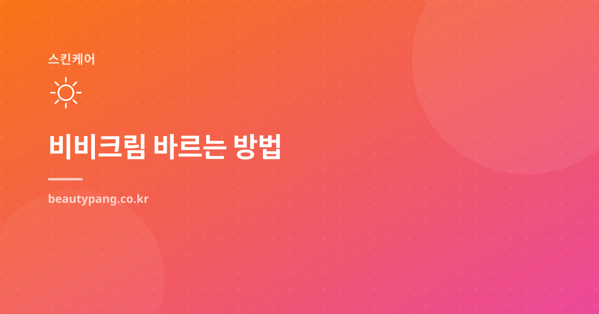

비비크림 바르는 방법(feat. 제대로 바르는 법)
여자들만 화장하던 시대는 이미 끝났고 요즘은 남자들도 가벼운 비비정도는 바르는 시대가 왔습니다. 모이스처라이저, 프라이머, 약간의 파운데이션 기능까지, 비비크림 한 가지로 모든 화장품을 대체할 수 있습니다. 한 번도 써본 적이 없다면 바를 때 실수 할 수가 있는데 오늘은 올바르게 비비크림을 바르는 방법에 대해서 알아보도록 하겠습니다.
비비크림은 여러 기능을 하고 다양한 효과를 자랑하지만 제품마다 조금씩 상이하기 때문에 원하는 비비크림을 구매하기에 앞서 구매하려는 비비크림이 어떠한 기능화 효과를 갖고 있는지 꼼꼼하게 확인하고 내 피부에 맞는 비비크림을 구매하는 것이 좋습니다.
보통 비비크림에 포함되어 있는 성분과 기능에는 보습, 화이트닝, 자외선(UV)차단, 물광 효과, 피부 비타민 공급, 프라이머 기능, 안티에이징 효과 등이 있습니다.
구매하려는 비비크림의 제조사가 아무리 유명하고 해당 비비크림에 담겨있는 성분이나 효과가 월등히 좋더라도 사람마다 다 다르게 작용할 수 있기 때문에 구매한 사람들의 리뷰를 읽고 제품의 품질이 좋은지 나에게 잘 맞는 제품인지 꼼꼼하게 확인 할 필요가 있습니다.
피부 톤이나 피부 상황, 피부 타입에 대하여 열거한 리뷰를 잘 읽어보고 나와 비슷한 피부 타입이나 톤을 가진 사람들의 리뷰를 중점으로 이 제품이 나에게 맞는지 간접적으로 확인할 수 있습니다.
리뷰도 읽어보고 제품의 성분 등을 확인 하였다면 피부 타입에 따라 필요한 화장품이 다르기 때문에 효과를 극대화하기 위해 건성, 지성, 중성용 제품 중 나에게 잘 맞는 피부 타입의 비비크림을 선택합니다.
지성 피부라면 민감한 피부인 경우가 많기 때문에 식물 추출물이 들어간 매트한 질감의 비비 크림을 추천드립니다. 그리고 자연 추출물이 들어간 제품이 피부에 자극이 덜 하다는 것도 참고 하시면 될 것 같습니다.
건성 피부라면 묽은 질감의 비비크림을 고르는게 좋은데 수분기가 없는 질감의 비비 크림은 오히려 피부를 건조하게 만들 수 있기 때문에 수분기가 많은 묽은 질감의 비비크림과 모이스처라이징 효과가 높은 비비크림을 선택하시는 것이 좋습니다.
중성 피부라면 피부를 편안하게 보습해주는 모이스처라이징 효과가 큰 비비크림을 고르는 것이 좋습니다. 피부 톤 보정 효과도 노린다면 화이트닝 기능이 함께 있는 비비크림을 고르는 것도 추천드립니다.
비비 크림의 경우 피부 톤 종류가 다양하지는 않지만 어느 정도는 피부 톤에 따라 다르게 나올 수 있습니다. 화장을 하지 않았을 때의 피부 톤과 잘 맞는 비비크림을 선택해야지만 평소에 발랐을 때 가장 자연스럽게 어울리수 있다는 것을 참고하세요.
톤 색깔을 비교할 때는 비비크림의 톤을 얼굴과 목의 피부 톤과 비교해보면 좋은데 손의 경우 얼굴이나 목의 피부 톤과는 약간 다른 톤을 가질수도 있기 때문입니다.
- 바르기 전 각질 제거
피부의 각질층이 두꺼우면 영양성분이나 다른 것들이 제대로 흡수를 하지 못합니다. 밀착력있게 깔끔한 발림성을 원하신다면 비비크림을 바르기 전 각질제거는 주기적으로 꼭 하시는게 좋습니다.
비비크림을 2:1비율로 로션 또는 수분크림(영양크림도 가능)을 섞어서 피부에 발라줍니다. 비비크림만 바르는 것보다 훨씬 부드럽고 촉촉하게 잘 발리기 때문입니다.
비비크림을 바를 때에는 얼굴의 중앙부터 바깥쪽으로 펴 발라주도록 합니다. 코 양옆면과 미간에서 시작하여 턱과 얼굴 가장자리 방향으로 진행해주시고 특히 깊은 주름이 지는 코 옆이나 눈 밑 부분은 사용량을 소량만 해서 펴발라 주는것이 좋습니다.
손의 온기를 이용해서 화장을 하면 화장이 잘먹었다.. 라는 표현을 하게 되는데 비슷한 원리입니다. 손을 싹싹 비벼서 손의 온도를 높이 후 30초 정도 얼굴을 감싸주면 비비크림의 피부 밀착력이 높아져서 효과가 오래오래 지속되게 됩니다.
메이크업을 다하고 마지막 단계에서 미스트를 너무 얼굴가까이에 대고 분사하지 마시고 20~30cm 정도 거리를 주고 분사하여 주면 고정해 주는 역할도 해주고 수분을 마지막으로 주기 때문에 피부가 촉촉해 보이는 효과가 생기므로 가볍게 뿌려준 후 두드려 흡수 시켜 줍니다.
감추고 싶은 자국이나 부위가 있으면 1차적으로 비비크림을 바르고 마를 때까지 몇 분 정도 기다린 후 덧바르고 싶은 부위에 비비므림을 발라 해당 부위를 감추면 됩니다. 비비크림으로 완벽하게 무결점의 피부처럼 보이게 만들 수는 없지만 무결점으로 만들어 주기 보다는 피부 톤을 보정하는 효과가 있다는 것을 참고하고 위의 방법대로 제대로 알고 비비크림을 바르는 것을 추천드립니다.
함께 보면 좋은 계산기